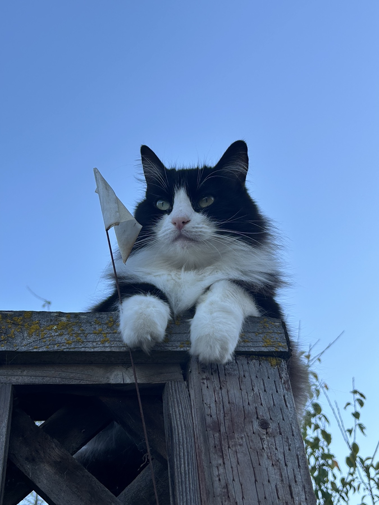
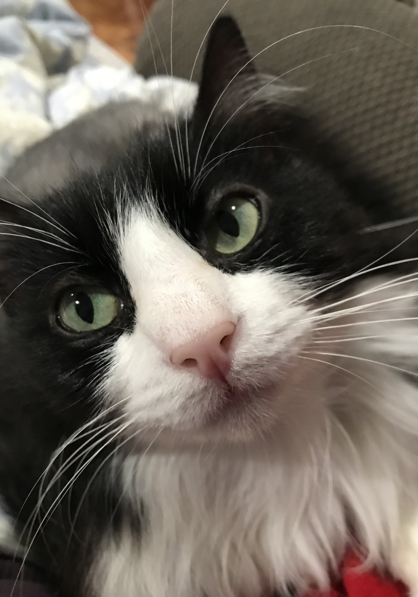

Soft paws, softer mornings
Aphrodite has a new ritual: a slow parade from the couch to the sunniest corner of the room, pausing only to blink at the window birds. This first entry is a little postcard from that morning.
I kept the camera close and let the light do the work. These frames capture her calm, the tiny stretch before a nap, and the way she watches the world like she owns every sunbeam.




Next time: a new toy, a sudden sprint, and the soundtrack of tiny paws across the floor. Until then, may every morning be this soft.
Back to home